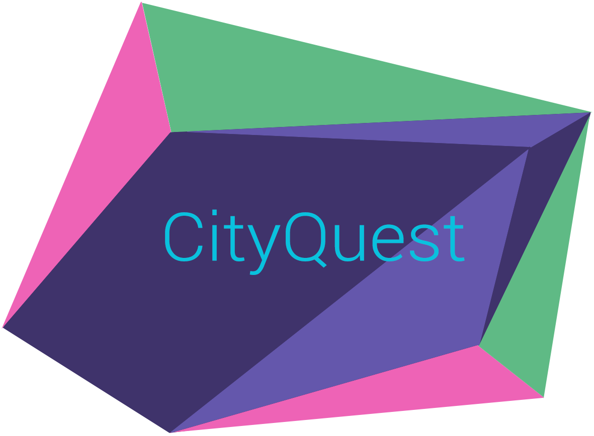
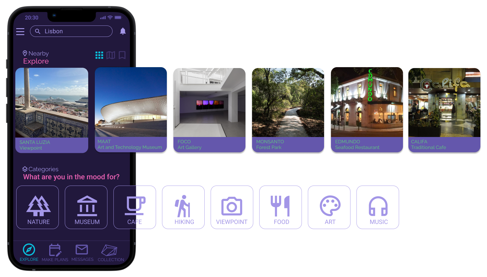
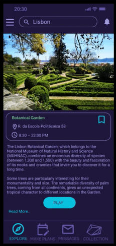
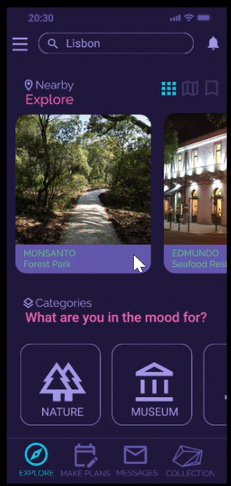
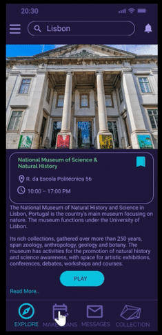
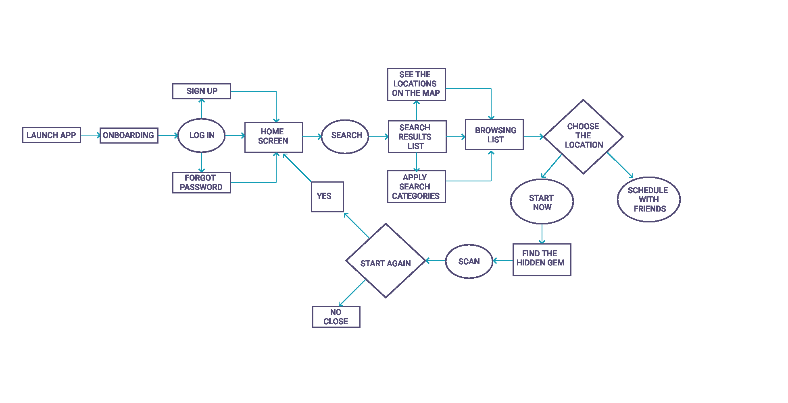
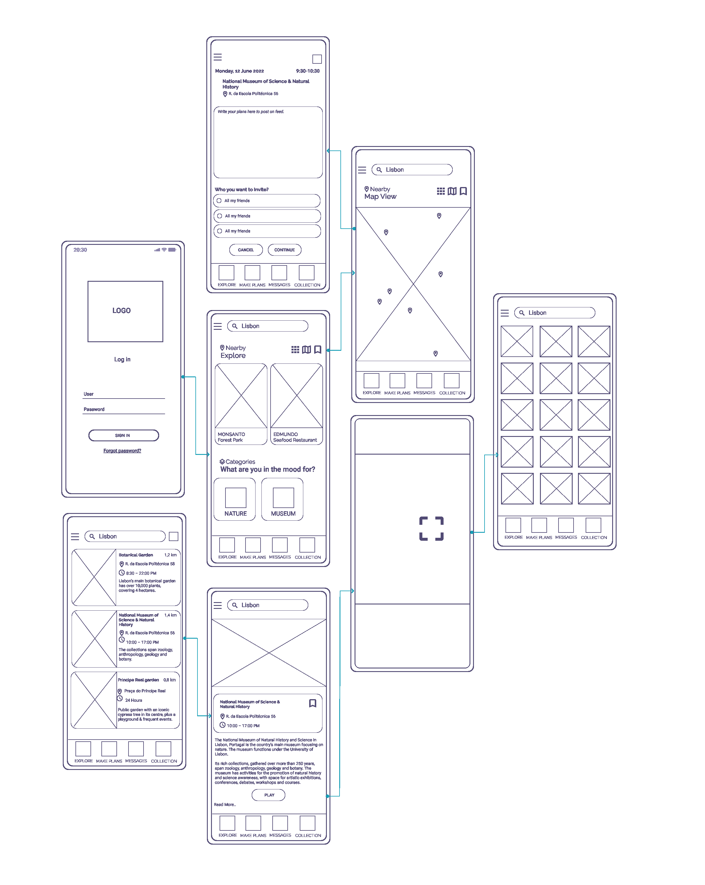

An AR city game that turns walking and cycling into a treasure hunt, designed to get people moving, exploring and meeting in their own city.


Sedentary lifestyles are rising, and most fitness apps motivate people who are already active. Could the city itself become the reason to move?
CityQuest started as part of a research proposal at ISTAR exploring how digital tools can support physical and mental well-being in urban life. My brief was to design a concept that encourages active mobility (walking and cycling), urban exploration and social interaction.
I worked on CityQuest alone, from framing the research to testing the prototypes:
I combined three sources: literature on gamification and physical activity, a review of apps like Pokémon GO, Strava and geocaching apps, and interviews with four experts from different disciplines. Together they helped me check the concept against the city, against technical feasibility and against project scope.
Points and badges fade quickly. Rewards tied to real locations give people a reason to go somewhere new.
People are more likely to go out when someone is expecting them, and less likely when it's only a personal target.
“Where should I go?” stops people before they start, so the first step has to be effortless.
Each feature had to earn its place by prompting a real-world action.

Virtual gems hidden around the city, found by scanning with the camera and kept in a personal collection. They give every walk a goal and make new places worth visiting.
The Explore screen asks “What are you in the mood for?” and offers categories like Nature, Museum, Café, Hiking and Art, so a decision becomes one tap.


Users can save places, schedule a visit and invite friends, turning a solo intention into a shared plan.
I mapped the full journey before designing screens, then turned it into a wireflow of the main screens and how they connect.


The research gave me three insights, and each design decision built on them came with a measurable target. Validation runs in two steps: a moderated test with 5–8 people on the animated prototype, then a two-week pilot with a small group in one neighbourhood.
The moderated test ends with a SUS questionnaire, with a target score of 75+.
That's how I approach enterprise tools today: design for the action, then measure it.